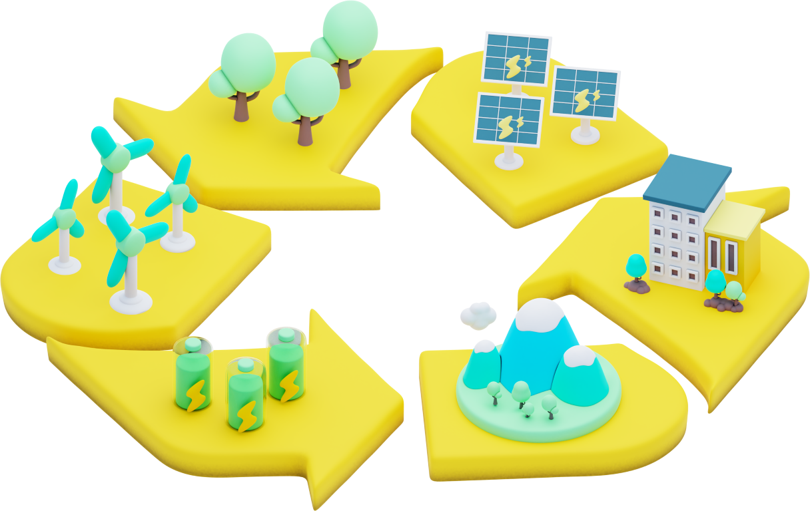

<div
  class="flex flex-col sm:w-5/6 mx-auto sm:flex-row justify-center items-center gap-12 mb-10 sm:mb-24 p-3"
>
  
  <div class="flex flex-col gap-4 w-full text-base sm:text-xl">
    <h3 class="text-2xl sm:text-5xl underline decoration-primary">
      Recycling in Our Parking Areas
    </h3>
    <p>
      We are committed to sustainability by incorporating recycled plastics into
      our parking lot infrastructure. Here’s how we do it:
    </p>
    
    <ul class="list-decimal ml-5">
      <li>
        <span class="font-semibold">Shredding:</span> Recycled plastics are
        shredded into small pieces.
      </li>
      <li>
        <span class="font-semibold"> Heating:</span> The shredded plastics are
        combined with heated blue metal.
      </li>
      <li>
        <span class="font-semibold">Melting:</span> The mixture is melted with
        brick jelly.
      </li>
      <li>
        <span class="font-semibold">Adding Bitumen:</span> Bitumen is added to
        the melted mixture.
      </li>
      <li>
        <span class="font-semibold">Laying the Road:</span> The final mixture is
        laid down to create the parking area surface.
      </li>
    </ul>
    <p>
      Using recycled plastics in our parking lots helps reduce waste and
      promotes a circular economy.
    </p>
  </div>
</div>
